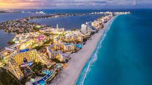
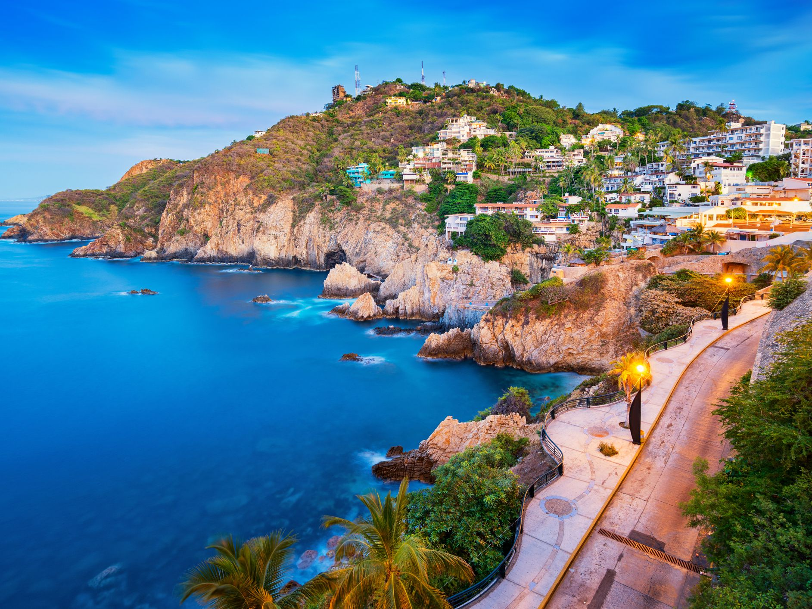
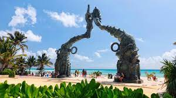

In Cancun you can find adventure, party, luxury, relaxation and culture, all in one place. Located in the state of Quintana Roo, in the Yucatan Peninsula, in the east it is bathed by the turquoise waters of the Caribbean Sea and in the west by the unforgettable sunsets of the Nichupté Lagoon. Having the second largest reef in the world, the Mesoamerican Reef System, the beauty of Cancun is not only on land, but under the underwater world.
If you are looking for a massive celebration, you will find it in the Mexican capital. With some of the best clubs in the world, Mexico invites you to a night of Latin music and dance full of temptations. You can find a menu of innovative cocktails, rhythms of all kinds and make friends with people from all over the world. In the Mexican capital you will have a vacation that will exceed your expectations.
Acapulco, world famous not only for its music, but for a decoration that often evokes the beach, the sea and the entire Caribbean atmosphere, continues to be a destination chosen by thousands of tourists each year. And it's not hard to see why: with its beautiful beaches, turquoise waters, energy clubs, and world-class food, it packs together all the factors one needs to have a great vacation.
Located in the southwest of the country, Chiapas is one of the most beautiful places that Mexico has. Archaeologists from all over the world visit it not only for its natural wealth, but because it has been the cradle of magical legends and stories. It is an area where there are small indigenous communities, such as San Juan Chamula, that intertwine their traditions rich in history, culture and folklore. The most beautiful natural landscapes are found in Tuxtla Gutiérrez, Chiapa de Corzo, San Cristóbal de las Casas, Comitán, Palenque, Tonalá and Tapachula, full of tours and adventures with the flora and fauna of southern Mexico, and archaeological monuments.
One hour from Cancun is the paradisiacal Playa del Carmen. It is one of the most beautiful resorts that Mexico has and that offers tourists the best shopping, a nightlife full of music and luxury, fresh food from artisanal fishing and the most amazing diving. Located in the Rivera Maya, a Caribbean jewel that stretches across the Yucatan Peninsula, Playa del Carmen is ideal for visiting nature reserves and meeting exotic animals such as the spider monkey, crocodiles and birds of all colors.
San Luis Potosí was a mining area in past centuries and its wealth has left it an architectural legacy that visitors continue to appreciate. Its cathedral and its museums embody this story. But you cannot miss its natural attractions, such as the Tamul Waterfall. It's true: It is not as big as Niagara or Iguazú, but it is still one of the most impressive places to visit in Mexico.